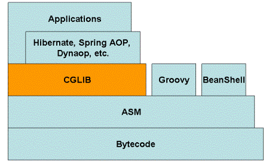

CGLIB
什么是CGLIB
CGLIB（Code Generator Library）是一个强大的、高性能的代码生成库。其被广泛应用于AOP框架（Spring、dynaop）中，用以提供方法拦截操作。 Hibernate作为一个比较受欢迎的ORM框架，同样使用CGLIB来代理单端（多对一和一对一）关联（延迟提取集合使用的另一种机制）。
为什么使用CGLIB
CGLIB代理主要通过对字节码的操作，为对象引入间接级别，以控制对象的访问。我们知道Java中有一个动态代理也是做这个事情的，那我们为什么不直接使用Java动态代理，而要使用CGLIB呢？ 答案是CGLIB相比于JDK动态代理更加强大，JDK动态代理虽然简单易用，但是其有一个致命缺陷是，只能对接口进行代理。如果要代理的类为一个普通类、没有接口，那么Java动态代理就没法使用了
CGLIB组成结构

CGLIB底层使用了ASM（一个短小精悍的字节码操作框架）来操作字节码生成新的类。除了CGLIB库外，脚本语言（如Groovy何BeanShell）也使用ASM生成字节码。 ASM使用类似SAX的解析器来实现高性能。我们不鼓励直接使用ASM，因为它需要对Java字节码的格式足够的了解
一个示例
<dependency>
<groupId>cglib</groupId>
<artifactId>cglib</artifactId>
<version>2.2.2</version>
</dependency>
public class HelloImpl implements IHello {
@Override
public void sayHello() {
System.out.println("hello");
}
}
public class CgLibClient {
public static void main(String[] args) {
Enhancer enhancer = new Enhancer();
enhancer.setSuperclass(HelloImpl.class);
enhancer.setCallback(new MethodInterceptor() {
@Override
public Object intercept(Object o, Method method, Object[] args, MethodProxy methodProxy) throws Throwable {
System.out.println("before method run...");
Object result = methodProxy.invokeSuper(o, args);
System.out.println("after method run...");
return result;
}
});
HelloImpl hello = (HelloImpl) enhancer.create();
hello.sayHello();
}
}
常用的API
Enhancer
Enhancer可能是CGLIB中最常用的一个类，和Java1.3动态代理中引入的Proxy类差不多。和Proxy不同的是，Enhancer既能够代理普通的class，也能够代理接口。 Enhancer创建一个被代理对象的子类并且拦截所有的方法调用（包括从Object中继承的toString和hashCode方法）。 Enhancer不能够拦截final方法，例如Object.getClass()方法，这是由于Java final方法语义决定的。基于同样的道理，Enhancer也不能对fianl类进行代理操作。 这也是Hibernate为什么不能持久化final class的原因。
@Test
public void testFixedValue(){
Enhancer enhancer = new Enhancer();
enhancer.setSuperclass(SampleClass.class);
enhancer.setCallback(new FixedValue() {
@Override
public Object loadObject() throws Exception {
return "Hello cglib";
}
});
SampleClass proxy = (SampleClass) enhancer.create();
System.out.println(proxy.test(null)); //拦截test，输出Hello cglib
System.out.println("=========");
System.out.println(proxy.toString());
System.out.println("=========");
System.out.println(proxy.getClass());
System.out.println("=========");
System.out.println(proxy.hashCode());
}
Hello cglib
=========
Hello cglib
=========
class cglib.SampleClass$$EnhancerByCGLIB$$a9f5b392
=========
java.lang.ClassCastException: java.lang.String cannot be cast to java.lang.Number
上述代码中，FixedValue用来对所有拦截的方法返回相同的值，从输出我们可以看出来，Enhancer对非final方法test()、toString()、hashCode()进行了拦截，没有对getClass进行拦截。 由于hashCode()方法需要返回一个Number，但是我们返回的是一个String，这解释了上面的程序中为什么会抛出异常。
Enhancer.setSuperclass用来设置父类型，从toString方法可以看出，使用CGLIB生成的类为被代理类的一个子类，形如：SampleClass$$EnhancerByCGLIB$$e3ea9b7
Enhancer.create(Object…)方法是用来创建增强对象的，其提供了很多不同参数的方法用来匹配被增强类的不同构造方法。 （虽然类的构造放法只是Java字节码层面的函数，但是Enhancer却不能对其进行操作。Enhancer同样不能操作static或者final类）。 我们也可以先使用Enhancer.createClass()来创建字节码(.class)，然后用字节码动态的生成增强后的对象。
可以使用一个InvocationHandler作为回调，使用invoke方法来替换直接访问类的方法，但是你必须注意死循环。 因为invoke中调用的任何原代理类方法，均会重新代理到invoke方法中。
@Test
public void testInvocationHandler() throws Exception {
Enhancer enhancer = new Enhancer();
enhancer.setSuperclass(SampleClass.class);
enhancer.setCallback(new InvocationHandler() {
@Override
public Object invoke(Object proxy, Method method, Object[] args) throws Throwable {
if (method.getDeclaringClass() != Object.class && method.getReturnType() == String.class) {
return "hello cglib";
} else {
throw new RuntimeException("Do not know what to do");
}
}
});
SampleClass proxy = (SampleClass) enhancer.create();
System.out.println(proxy.test(null));
// Assert.assertEquals("hello cglib", proxy.test(null));
Assert.assertNotEquals("Hello cglib", proxy.toString());
}
u
为了避免这种死循环，我们可以使用MethodInterceptor，MethodInterceptor的例子在前面的hello world中已经介绍过了，这里就不浪费时间了。
有些时候我们可能只想对特定的方法进行拦截，对其他的方法直接放行，不做任何操作，使用Enhancer处理这种需求同样很简单,只需要一个CallbackFilter即可：
@Test
public void testCallbackFilter() throws Exception {
Enhancer enhancer = new Enhancer();
CallbackHelper callbackHelper = new CallbackHelper(SampleClass.class, new Class[0]) {
@Override
protected Object getCallback(Method method) {
if (method.getDeclaringClass() != Object.class && method.getReturnType() == String.class) {
return new FixedValue() {
@Override
public Object loadObject() throws Exception {
return "Hello cglib";
}
};
} else {
return NoOp.INSTANCE;
}
}
};
enhancer.setSuperclass(SampleClass.class);
enhancer.setCallbackFilter(callbackHelper);
enhancer.setCallbacks(callbackHelper.getCallbacks());
SampleClass proxy = (SampleClass) enhancer.create();
Assert.assertEquals("Hello cglib", proxy.test(null));
Assert.assertNotEquals("Hello cglib", proxy.toString());
System.out.println(proxy.hashCode());
}
2080166188
ImmutableBean
通过名字就可以知道，不可变的Bean。ImmutableBean允许创建一个原来对象的包装类，这个包装类是不可变的，任何改变底层对象的包装类操作都会抛出IllegalStateException。但是我们可以通过直接操作底层对象来改变包装类对象。这有点类似于Guava中的不可变视图
为了对ImmutableBean进行测试，这里需要再引入一个bean
public class SampleBean {
private String value;
public SampleBean() {
}
public SampleBean(String value) {
this.value = value;
}
public String getValue() {
return value;
}
public void setValue(String value) {
this.value = value;
}
}
然后编写测试类如下：
@Test(expected = IllegalStateException.class)
public void testImmutableBean() throws Exception{
SampleBean bean = new SampleBean();
bean.setValue("Hello world");
SampleBean immutableBean = (SampleBean) ImmutableBean.create(bean); //创建不可变类
Assert.assertEquals("Hello world",immutableBean.getValue());
bean.setValue("Hello world, again"); //可以通过底层对象来进行修改
Assert.assertEquals("Hello world, again", immutableBean.getValue());
immutableBean.setValue("Hello cglib"); //直接修改将throw exception
}
BeanGenerator
cglib提供的一个操作bean的工具，使用它能够在运行时动态的创建一个bean。
@Test
public void testBeanGenerator() throws Exception{
BeanGenerator beanGenerator = new BeanGenerator();
beanGenerator.addProperty("value",String.class);
Object myBean = beanGenerator.create();
Method setter = myBean.getClass().getMethod("setValue",String.class);
setter.invoke(myBean,"Hello cglib");
Method getter = myBean.getClass().getMethod("getValue");
Assert.assertEquals("Hello cglib",getter.invoke(myBean));
}
在上面的代码中，我们使用cglib动态的创建了一个和SampleBean相同的Bean对象，包含一个属性value以及getter、setter方法
BeanCopier
cglib提供的能够从一个bean复制到另一个bean中，而且其还提供了一个转换器，用来在转换的时候对bean的属性进行操作。
@Test
public void testBeanCopier() throws Exception{
BeanCopier copier = BeanCopier.create(SampleBean.class, OtherSampleBean.class, false);//设置为true，则使用converter
SampleBean myBean = new SampleBean();
myBean.setValue("Hello cglib");
OtherSampleBean otherBean = new OtherSampleBean();
copier.copy(myBean, otherBean, null); //设置为true，则传入converter指明怎么进行转换
Assert.assertEquals("Hello cglib", otherBean.getValue());
}
BulkBean
相比于BeanCopier，BulkBean将copy的动作拆分为getPropertyValues和setPropertyValues两个方法，允许自定义处理属性
@Test
public void testBulkBean() throws Exception {
BulkBean bulkBean = BulkBean.create(SampleBean.class,
new String[]{"getValue"},
new String[]{"setValue"},
new Class[]{String.class});
SampleBean bean = new SampleBean();
bean.setValue("Hello world");
Object[] propertyValues = bulkBean.getPropertyValues(bean);
Assert.assertEquals(1, bulkBean.getPropertyValues(bean).length);
Assert.assertEquals("Hello world", bulkBean.getPropertyValues(bean)[0]);
bulkBean.setPropertyValues(bean, new Object[]{"Hello cglib"});
Assert.assertEquals("Hello cglib", bean.getValue());
}
使用注意：
- 避免每次进行BulkBean.create创建对象，一般将其声明为static的
- 应用场景：针对特定属性的get,set操作，一般适用通过xml配置注入和注出的属性，运行时才确定处理的Source,Target类，只需要关注属性名即可。
BeanMap
BeanMap类实现了Java Map，将一个bean对象中的所有属性转换为一个String-to-Obejct的Java Map
@Test
public void testBeanMap() throws Exception {
BeanGenerator generator = new BeanGenerator();
generator.addProperty("username", String.class);
generator.addProperty("password", String.class);
Object bean = generator.create();
Method setUserName = bean.getClass().getMethod("setUsername", String.class);
Method setPassword = bean.getClass().getMethod("setPassword", String.class);
setUserName.invoke(bean, "admin");
setPassword.invoke(bean, "password");
BeanMap map = BeanMap.create(bean);
Assert.assertEquals("admin", map.get("username"));
Assert.assertEquals("password", map.get("password"));
}
我们使用BeanGenerator生成了一个含有两个属性的Java Bean，对其进行赋值操作后，生成了一个BeanMap对象，通过获取值来进行验证
keyFactory
keyFactory类用来动态生成接口的实例，接口需要只包含一个newInstance方法，返回一个Object。keyFactory为构造出来的实例动态生成了Object.equals和Object.hashCode方法，能够确保相同的参数构造出的实例为单例的。
public interface SampleKeyFactory {
Object newInstance(String first, int second);
}
我们首先构造一个满足条件的接口，然后进行测试
@Test
public void testKeyFactory() throws Exception {
SampleKeyFactory keyFactory = (SampleKeyFactory) KeyFactory.create(SampleKeyFactory.class);
Object key = keyFactory.newInstance("foo", 42);
Object key1 = keyFactory.newInstance("foo", 42);
Assert.assertEquals(key, key1);//测试参数相同，结果是否相等
}
Mixin(混合)
Mixin能够让我们将多个对象整合到一个对象中去，前提是这些对象必须是接口的实现。可能这样说比较晦涩，以代码为例：
public interface Interface1 {
String first();
}
public interface Interface2 {
String second();
}
public class Class1 implements Interface1{
@Override
public String first() {
return "first";
}
}
public class Class2 implements Interface2 {
@Override
public String second() {
return "second";
}
}
public interface MixinInterface extends Interface1, Interface2 {
}
@Test
public void testMixin() throws Exception {
Mixin mixin = Mixin.create(new Class[]{Interface1.class, Interface2.class,
MixinInterface.class}, new Object[]{new Class1(), new Class2()});
MixinInterface mixinDelegate = (MixinInterface) mixin;
Assert.assertEquals("first", mixinDelegate.first());
Assert.assertEquals("second", mixinDelegate.second());
}
Mixin类比较尴尬，因为他要求Minix的类（例如MixinInterface）实现一些接口。既然被Minix的类已经实现了相应的接口，那么我就直接可以通过纯Java的方式实现，没有必要使用Minix类。
StringSwitcher
用来模拟一个String到int类型的Map类型。如果在Java7以后的版本中，类似一个switch语句。
@Test
public void testStringSwitcher() throws Exception{
String[] strings = new String[]{"one", "two"};
int[] values = new int[]{10,20};
StringSwitcher stringSwitcher = StringSwitcher.create(strings,values,true);
assertEquals(10, stringSwitcher.intValue("one"));
assertEquals(20, stringSwitcher.intValue("two"));
assertEquals(-1, stringSwitcher.intValue("three"));
}
InterfaceMaker
正如名字所言，Interface Maker用来创建一个新的Interface
@Test
public void testInterfaceMarker() throws Exception{
Signature signature = new Signature("foo", Type.DOUBLE_TYPE, new Type[]{Type.INT_TYPE});
InterfaceMaker interfaceMaker = new InterfaceMaker();
interfaceMaker.add(signature, new Type[0]);
Class iface = interfaceMaker.create();
assertEquals(1, iface.getMethods().length);
assertEquals("foo", iface.getMethods()[0].getName());
assertEquals(double.class, iface.getMethods()[0].getReturnType());
}
上述的Interface Maker创建的接口中只含有一个方法，签名为double foo(int)。Interface Maker与上面介绍的其他类不同，它依赖ASM中的Type类型。由于接口仅仅只用做在编译时期进行类型检查， 因此在一个运行的应用中动态的创建接口没有什么作用。但是InterfaceMaker可以用来自动生成代码，为以后的开发做准备。
Method delegate
MethodDelegate主要用来对方法进行代理
public interface BeanDelegate {
String getValueFromDelegate();
}
@Test
public void testMethodDelegate() throws Exception {
SampleBean bean = new SampleBean();
bean.setValue("Hello cglib");
BeanDelegate delegate = (BeanDelegate) MethodDelegate.create(bean, "getValue", BeanDelegate.class);
Assert.assertEquals("Hello cglib", delegate.getValueFromDelegate());
}
关于Method.create的参数说明：
- 第二个参数为即将被代理的方法
- 第一个参数必须是一个无参数构造的bean。因此MethodDelegate.create并不是你想象的那么有用
- 第三个参数为只含有一个方法的接口。当这个接口中的方法被调用的时候，将会调用第一个参数所指向bean的第二个参数方法
缺点
- 为每一个代理类创建了一个新的类，这样可能会占用大量的永久代堆内存
- 你不能代理需要参数的方法
- 如果你定义的接口中的方法需要参数，那么代理将不会工作，并且也不会抛出异常；如果你的接口中方法需要其他的返回类型，那么将抛出IllegalArgumentException
Constructor delegate
为了对构造函数进行代理，我们需要一个接口，这个接口只含有一个Object newInstance(…)方法，用来调用相应的构造函数
FastClass
顾明思义，FastClass就是对Class对象进行特定的处理，比如通过数组保存method引用，因此FastClass引出了一个index下标的新概念，比如getIndex(String name, Class[] parameterTypes)就是以前的获取method的方法。通过数组存储method,constructor等class信息，从而将原先的反射调用，转化为class.index的直接调用，从而体现所谓的FastClass。
@Test
public void testFastClass() throws Exception {
FastClass fastClass = FastClass.create(SampleBean.class);
FastMethod fastMethod = fastClass.getMethod("getValue", new Class[0]);
SampleBean bean = new SampleBean();
bean.setValue("Hello world");
Assert.assertEquals("Hello world", fastMethod.invoke(bean, new Object[0]));
}
注意
由于CGLIB的大部分类是直接对Java字节码进行操作，这样生成的类会在Java的永久堆中。如果动态代理操作过多，容易造成永久堆满，触发OutOfMemory异常。